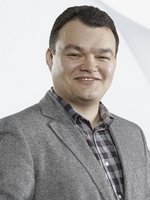

Welcome
Welcome to the course. Internet is the most relevant information technology of our age. World Wide Web is its most important application. In this course we will learn the architecture of WWW, its main protocols and representation formats. The practical component of the course will focus on design and implementation of Web applications. Additional topics such as Semantic Web, Social Web and Adaptive Web will help us better undestand current trends of Web development.
Course News
Formal Data
| Lectures |
Wednesday (13:15 - 15:00) Friday (11:00 - 12:45) |
 |
|---|---|---|
| Practice |
Wednesday (15:15 - 17:00) Friday (13:15 - 15:00) |
|
| Instructor | Sergey Sosnovsky | |
| Teaching assistants |
Christopher Ferguson Sander Vanheste |
|
| Student assistants |
Michiel van Heusden Rick de Boer Silvan Eelman |